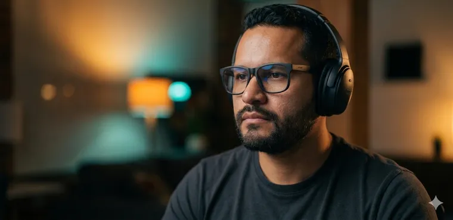
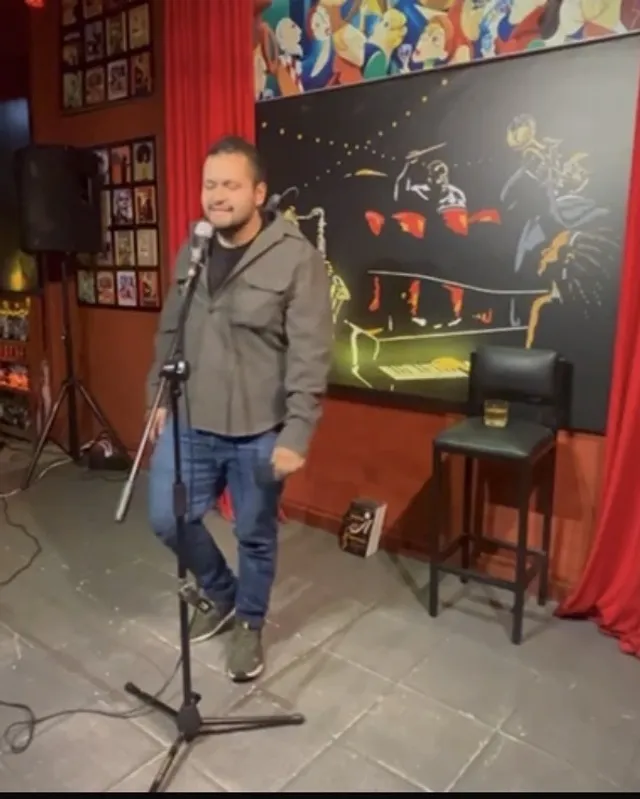
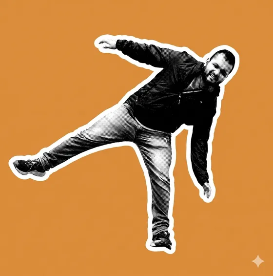

Medición e incrementalidad
¿Tu campaña funcionó o solo se llevó el crédito? Experimentos aleatorizados, lift tests y A/B geográfico para separar lo que mueve la aguja de lo que solo acompaña.
- RCT
- Lift testing
- Causal Impact
Manuel Oviedo · científico de datos & IA
Manejo la pauta —Google Ads, Meta, Search Ads 360— y el modelo que la mide: Python, SQL, inferencia causal. Sin humo: experimentos de verdad y resultados que se pueden auditar.

He medido para
Nestlé, Coca-Cola, Lego, Universal, McDonald’s y Banco Mundial.
¿Tu campaña funcionó o solo se llevó el crédito? Experimentos aleatorizados, lift tests y A/B geográfico para separar lo que mueve la aguja de lo que solo acompaña.
Cuánto aporta cada canal y dónde poner el próximo dólar. Modelos bayesianos que rediseñan presupuestos: el último entregó un 13% más de ROI.
Modelos predictivos, NLP y pipelines automatizados para que tu medición no dependa de un Excel heroico. Lo estudio en una maestría y lo aplico en producción.
Antes de tocar una línea de código, entiendo qué decisión está en juego. Un modelo que responde la pregunta equivocada es caro y elegante.
RCT, incrementalidad o Marketing Mix Model — la herramienta que pida la pregunta. Mido el contrafactual: qué habría pasado sin la campaña.
Del SQL al comité directivo, sin traductor en el medio, en español o en inglés. Si no se entiende, no sirve.
Frameworks reutilizables, pipelines automatizados, medición que tu equipo puede mantener. No vendo dependencia.
Lo que más me gusta es crear, e ir hasta el fondo de las cosas. Todo lo que sigue sale de ahí.
El buen marketing cambia cómo alguien ve el mundo, no solo cuánto compra. Si lo único que movemos es la caja, nos quedamos cortos.
Antes del dato y del modelo está la persona que lo va a ver. Qué siente, qué la mueve, qué la aburre: eso va primero.
Trabajo con comediantes para hacer pauta que nadie más haría. El humor no es relleno: es cómo dices algo verdadero y que se quede.
El trabajo que no cambia una decisión es trabajo desperdiciado. Miramos a fondo y decidimos, no producimos reportes por producir.
Domino la caja de herramientas — pero son solo eso. El punto nunca es la herramienta.
Sé todo en cada cosa. Pon cuanto eres
en lo mínimo que hagas.
Y resulta que esa es la ventaja. Tres escenas explican cómo trabajo:

Me gusta crear y me gusta ir a fondo. Ahí —y solo ahí— aparece lo que de verdad transforma.


¿El plan de fondo? Una vida con significado: ideas que le sirvan a alguien, buenas empresas a las que valga la pena ayudar, tiempo para gozársela — y este señor.
Cuéntame qué no te cuadra de tus números. Una buena pregunta basta.